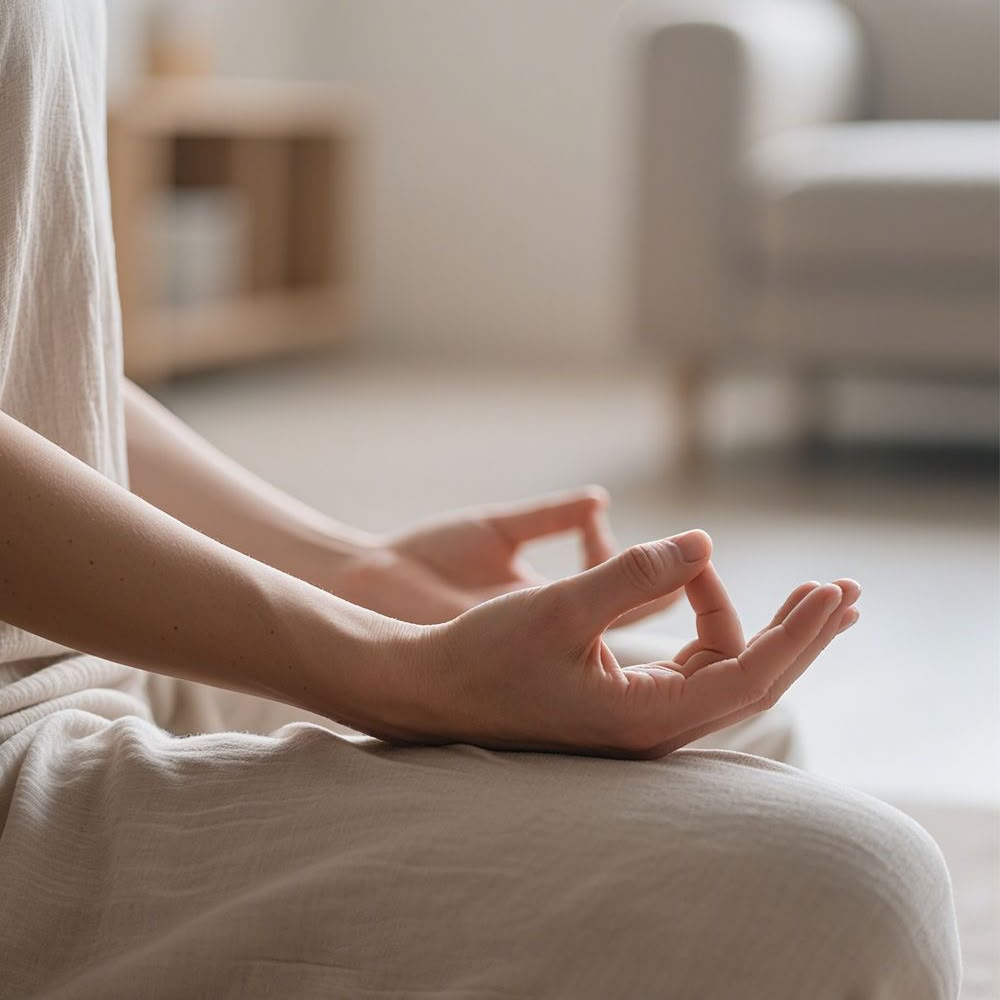

Cuando enfrentamos momentos de estrés o ansiedad, nuestro cuerpo reacciona tensándose. Practicar ejercicios sencillos de respiración ayuda a regular el sistema nervioso y a recuperar el enfoque.
Inhala: Toma aire por la nariz despacio durante 4 segundos.
Sostén: Mantén el aire en tus pulmones durante 4 segundos.
Exhala: Libera el aire lentamente por la boca durante 6 segundos.
Repite: Realiza este ciclo entre 3 y 5 veces para reducir la tensión corporal.